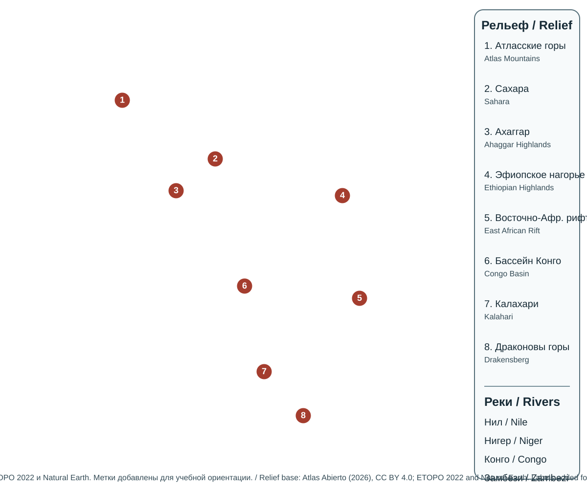
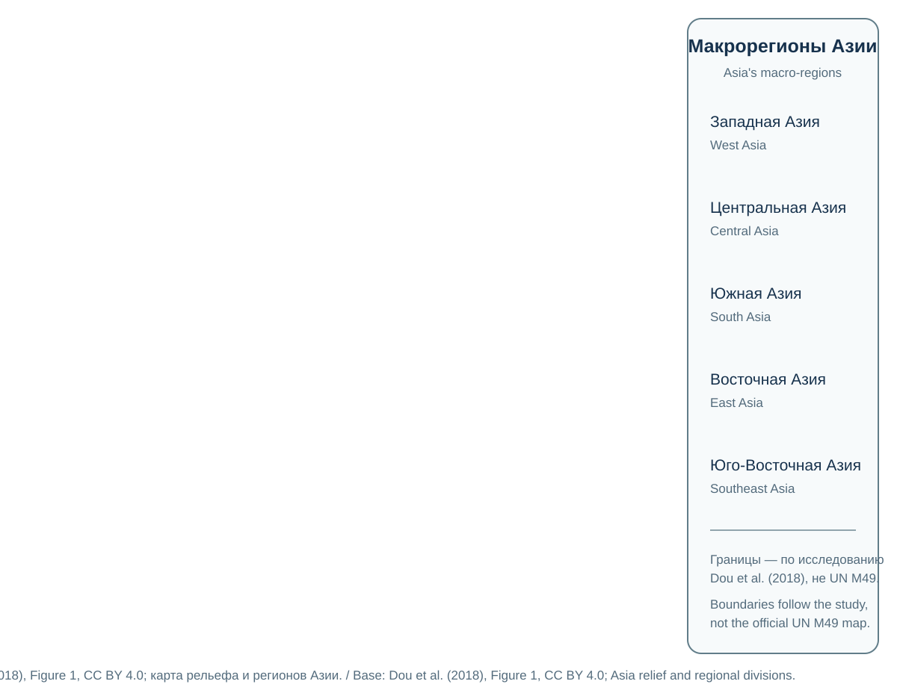
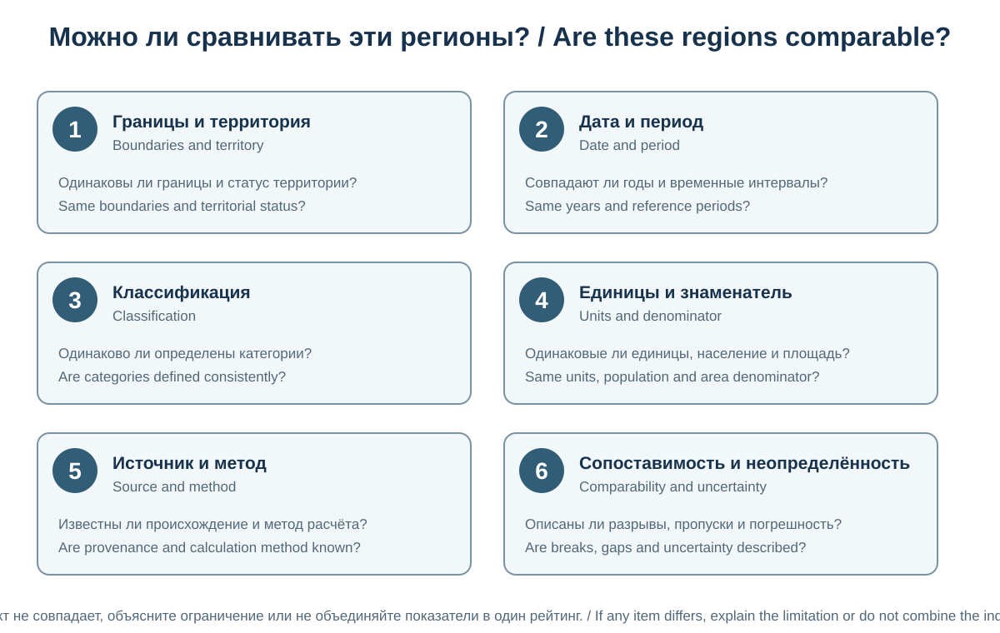

Глава 12. География мировых регионов
Chapter 12. Geography of World Regions
Часть II. Человек и география общества / Part II. People and the Geography of Society
Научно-образовательный атлас географии / Scientific and Educational Geography Atlas
Цели главыChapter objectives
Региональная география изучает крупные части мира как сложные территориальные системы, в которых взаимодействуют природные условия, население, культура, экономика, политические институты и исторические связи. Глава знакомит с принципами регионализации мира и сравнительным обзором основных макрорегионов. Она не заменяет подробные страноведческие исследования, а даёт пространственную основу для понимания глобального разнообразия.
Regional geography studies major parts of the world as complex territorial systems shaped by interactions among physical environments, populations, cultures, economies, political institutions and historical connections. This chapter introduces principles of world regionalisation and offers a comparative overview of major macro-regions. It provides a spatial framework rather than a substitute for detailed country studies.
12.1. Понятие региона и регионализация мираThe Concept of a Region and World Regionalisation
Регион — территория, выделенная по одному или нескольким признакам и рассматриваемая как относительно целостная пространственная система. Регион может быть природным, историко-культурным, социально-экономическим, политическим или функциональным.
Регионализация — процесс выделения территориальных единиц для исследования, управления, статистики и планирования. Единственной универсальной схемы деления мира нет: границы регионов зависят от цели и выбранных критериев.
Основные типы регионов: - физико-географические: материки, природные зоны, горные системы, речные бассейны; - историко-культурные: территории с общими историческими процессами, культурными контактами или языковыми связями; - социально-экономические: территории со сходной структурой хозяйства, уровнем развития или экономическими связями; - политико-географические: государства, интеграционные объединения и геополитические пространства; - функциональные: территории, объединённые потоками людей, товаров, услуг, информации или ежедневными поездками.
Региональные границы могут быть чёткими, как государственная граница, или переходными, как границы природных и культурных областей. Одно и то же место может относиться к разным регионам в зависимости от исследовательской задачи.
A region is an area identified by one or more characteristics and treated as a relatively coherent spatial system. A region may be physical-geographical, historical-cultural, socioeconomic, political or functional.
Regionalisation is the process of defining territorial units for research, administration, statistics or planning. There is no single universal way to divide the world: regional boundaries depend on the purpose and criteria used.
Major types of regions include: - physical-geographical regions: continents, natural zones, mountain systems and river basins; - historical-cultural regions: areas linked by shared historical processes, cultural contacts or language connections; - socioeconomic regions: areas with similar economic structures, levels of development or economic relationships; - political-geographical regions: states, integration groupings and geopolitical spaces; and - functional regions: areas connected by flows of people, goods, services, information or daily travel.
Regional boundaries may be clear, as with a state border, or transitional, as with natural and cultural regions. The same place may belong to different regions depending on the research question.
12.2. Принципы сравнительного регионального анализаPrinciples of Comparative Regional Analysis
Для сопоставления регионов используют общую систему вопросов: 1. географическое положение и соседство; 2. природные условия и ресурсы; 3. население, расселение и миграция; 4. исторические процессы и культурное разнообразие; 5. политические институты и международные связи; 6. структура экономики и инфраструктура; 7. экологические вызовы и климатические риски; 8. перспективы развития и неопределённости.
Сравнение должно опираться на сопоставимые показатели и одинаковые временные периоды. Различия в методах переписи, расчёта ВВП, определении городской территории и статистическом охвате могут создавать ложные контрасты.
Регион нельзя сводить к одному стереотипному признаку. Внутренние различия между городами и сельскими районами, прибрежными и внутренними территориями, поколениями и социальными группами часто не меньше, чем различия между странами.
Regions can be compared using a common set of questions: 1. geographic location and neighbouring areas; 2. natural conditions and resources; 3. population, settlement and migration; 4. historical processes and cultural diversity; 5. political institutions and international relations; 6. economic structure and infrastructure; 7. environmental challenges and climate risks; and 8. development prospects and uncertainties.
Comparisons should use comparable indicators and the same reference periods. Differences in census methods, GDP calculations, definitions of urban areas and statistical coverage can create misleading contrasts.
A region should not be reduced to a single stereotype. Differences within a region—between cities and rural areas, coastal and inland territories, generations and social groups—can be as large as differences between countries.
12.3. АфрикаAfrica

Основа рельефа и батиметрии: Atlas Abierto (2026), CC BY 4.0; исходные данные — ETOPO 2022 (NOAA NCEI, public domain) и Natural Earth (public domain). Изменения: добавлены двуязычные учебные подписи и ориентировочные метки; они не являются точной геопривязкой.Relief and bathymetry base: Atlas Abierto (2026), CC BY 4.0; underlying data: ETOPO 2022 (NOAA NCEI, public domain) and Natural Earth (public domain). Changes: bilingual teaching labels and approximate markers added; they are not precise georeferencing.
Природная основаPhysical geography
На севере материка простирается Сахара — крупнейшая жаркая пустыня мира. К югу располагаются Сахель, саванны, влажные тропические леса бассейна Конго и другие природные комплексы. Восточно-Африканская рифтовая система формирует области разломов, вулканизма, высоких нагорий и глубоких озёр. На юге важны плато, пустыни Намиб и Калахари, а также горные и прибрежные ландшафты.
Крупные речные системы включают Нил, Конго, Нигер, Замбези и Оранжевую. Водные ресурсы распределены крайне неравномерно, а сезонность осадков играет большую роль для сельского хозяйства и водоснабжения.
Население и хозяйствоPopulation and economy
Африка характеризуется молодым возрастным составом населения и быстрыми демографическими изменениями, но темпы роста и структура населения заметно различаются между странами. Крупные города и агломерации быстро расширяются, создавая потребность в жилье, транспорте, энергетике, водоснабжении и рабочих местах.
Экономика включает сельское хозяйство, добычу полезных ископаемых, промышленность, торговлю, услуги, туризм и быстро развивающиеся цифровые отрасли. Экспортная специализация ряда стран связана с минеральным сырьём и сельскохозяйственными товарами, что может повышать уязвимость к колебаниям мировых цен.
Региональные вызовыRegional challenges
К числу важных вопросов относятся засушливость и изменчивость осадков, деградация земель, доступ к безопасной воде, продовольственная безопасность, энергетическая инфраструктура, городское развитие и последствия вооружённых конфликтов. При этом континент обладает значительным потенциалом солнечной энергетики, молодыми трудовыми ресурсами, природным и культурным наследием, а также возможностями региональной торговли.
Рисунок 12.1 / Figure 12.1 — Рельеф и основные природные объекты Африки / Africa's relief and major physical features.
Текущая SVG-карта содержит нумерованные подписи горных систем, пустынь, нагорий, рифтовой зоны, бассейна Конго и основных рек.Пять учебных субрегионов описаны в тексте; сама карта не является картой их границ. / The current SVG labels mountain systems, deserts, highlands, the rift zone, the Congo Basin and major rivers. The five teaching subregions are described in the text; the map itself does not delineate their boundaries.
Africa is the world's second-largest continent by area and its second-most populous continent. It contains highly diverse natural and human systems. Teaching schemes commonly distinguish North, West, Central, East and Southern Africa, although the composition of subregions may vary. UN M49 uses a different statistical scheme: Northern Africa and Sub-Saharan Africa; the latter is divided into Eastern, Middle, Southern and Western Africa.
Physical geography
The Sahara, the world's largest hot desert, extends across the north of the continent. South of it lie the Sahel, savannas, the humid tropical forests of the Congo Basin and other natural systems. The East African Rift System forms zones of faulting, volcanism, high plateaus and deep lakes. In the south, important features include plateaus, the Namib and Kalahari deserts, and mountain and coastal landscapes.
Major river systems include the Nile, Congo, Niger, Zambezi and Orange. Water resources are distributed very unevenly, and the seasonality of rainfall is important for agriculture and water supply.
Population and economy
Africa has a young population structure and is undergoing rapid demographic change, but population growth rates and structures vary considerably among countries. Large cities and urban agglomerations are expanding quickly, creating demand for housing, transport, energy, water supply and jobs.
Economic activity includes agriculture, mineral extraction, manufacturing, trade, services, tourism and rapidly developing digital industries. The export specialisation of some countries in minerals and agricultural commodities can increase their vulnerability to changes in world prices.
Regional challenges
Major issues include aridity and variable rainfall, land degradation, access to safe water, food security, energy infrastructure, urban development and the consequences of armed conflict. At the same time, the continent has substantial potential for solar energy, a young workforce, natural and cultural heritage, and regional trade.
12.4. ЕвропаEurope
Европа — западная часть материка Евразия, выделяемая как историко-географический и культурный регион. Её восточная граница условна и в разных географических традициях проводится по-разному. Европа включает разнообразные государства, природные зоны и экономические системы.
Природная основаPhysical geography
На севере расположены Скандинавские горы, озёрные и ледниковые ландшафты. Центральную и южную части пересекают Альпы, Пиренеи, Карпаты, Апеннины и другие горные системы. Крупные равнины и речные долины обеспечили развитие земледелия, промышленности и транспортных сетей.
К важным рекам относятся Волга, Дунай, Рейн, Днепр, Эльба, По и Рона. Климат меняется от арктического и субарктического на севере до средиземноморского на юге; западные районы испытывают сильное влияние Атлантики.
Население, экономика и интеграцияPopulation, economy and integration
Европа отличается высокой урбанизацией, развитой транспортной сетью и значительной ролью сферы услуг. В ряде стран наблюдаются старение населения, низкая рождаемость и зависимость отдельных отраслей от международной миграции. Внутренние различия включают контрасты между крупными агломерациями и периферийными территориями, а также между регионами с разной историей индустриализации.
Европейский союз — политико-экономическое объединение государств-членов, основанное на договорах и общих институтах. Он не охватывает всю Европу, и Европа не тождественна Европейскому союзу. Другие формы регионального сотрудничества включают Совет Европы, Европейскую ассоциацию свободной торговли и различные трансграничные программы; членство и компетенции этих организаций различаются.
Региональные вызовыRegional challenges
Среди значимых вопросов — энергетическая безопасность, климатическая адаптация, управление миграцией, региональное неравенство, демографическое старение, устойчивость транспортных систем и трансграничное загрязнение. Европа также является одним из важных мировых центров науки, образования, финансов, промышленности и культурного наследия.

12-E. Основа рельефа: Blue Green Atlas, «Free relief map of Europe», проекция Albers Equal Area Conic; топография — NASA SRTM3, батиметрия — GEBCO 2019, озёра и реки — Natural Earth. Лицензия CC BY 4.0. Дополнено учебной двуязычной легендой; карта не задаёт единственную официальную схему макрорегионов Европы.Relief base: Blue Green Atlas, “Free relief map of Europe”, Albers Equal Area Conic projection; topography — NASA SRTM3, bathymetry — GEBCO 2019, lakes and rivers — Natural Earth. CC BY 4.0. Supplemented with a bilingual teaching key; the map does not establish a single official macroregional division of Europe.
Основные формы рельефа и ориентиры / Major landforms and reference features: Северо-Европейская и Восточно-Европейская равнины; Скандинавские горы, Альпы, Пиренеи, Карпаты, Апеннины и Динарские Альпы; Скандинавский, Пиренейский, Апеннинский, Балканский и Ютландский полуострова; Норвежское, Северное, Балтийское, Средиземное, Чёрное и Баренцево моря.North European and East European plains; Scandinavian Mountains, Alps, Pyrenees, Carpathians, Apennines and Dinaric Alps; Scandinavian, Iberian, Italian, Balkan and Jutland peninsulas; Norwegian, North, Baltic, Mediterranean, Black and Barents seas.
Источник и лицензия / Source and licence: Blue Green Atlas — Europe relief map, CC BY 4.0. Изменение: добавлена двуязычная учебная легенда; исходное изображение не изменялось. / Change: a bilingual teaching key was added; the source image itself was not modified.
Рисунок 12.2 / Figure 12.2 — Физический рельеф и основные формы Европы / Europe's physical relief and major landforms.
Представленная основа показывает рельеф, а учебная легенда называет главные равнины, полуострова, горы, реки и моря. Она не содержит границ макрорегионов; схемы Северной, Западной, Центральной, Южной и Восточной Европы следует рассматривать отдельно и не наносить на эту карту без самостоятельной проверенной основы.The map base shows relief, while the teaching key names major plains, peninsulas, mountains, rivers and seas. It does not show macroregional boundaries; divisions into Northern, Western, Central, Southern and Eastern Europe should be treated separately and not added to this map without a separately verified base.
Europe is the western part of the Eurasian landmass, distinguished as a historical-geographical and cultural region. Its eastern boundary is conventional and is drawn differently in different geographic traditions. Europe includes a wide range of states, natural zones and economic systems.
Physical geography
The Scandinavian Mountains, lakes and glacial landscapes are found in the north. The Alps, Pyrenees, Carpathians, Apennines and other mountain systems cross central and southern Europe. Large plains and river valleys have supported the development of agriculture, industry and transport networks.
Important rivers include the Volga, Danube, Rhine, Dnieper, Elbe, Po and Rhône. Climate ranges from Arctic and subarctic in the north to Mediterranean in the south; western areas are strongly influenced by the Atlantic Ocean.
Population, economy and integration
Europe is characterised by high urbanisation, developed transport networks and a major services sector. Some countries face population ageing, low fertility and dependence on international migration in particular industries. Internal differences include contrasts between large urban agglomerations and peripheral territories, as well as between regions with different histories of industrialisation.
The European Union is a political and economic union of member states based on treaties and common institutions. It does not include all of Europe, and Europe is not synonymous with the European Union. Other forms of regional cooperation include the Council of Europe, the European Free Trade Association and various cross-border programmes; their membership and powers differ.
Regional challenges
Important issues include energy security, climate adaptation, migration management, regional inequality, population ageing, transport-system resilience and transboundary pollution. Europe is also a major global centre of science, education, finance, industry and cultural heritage.
12.5. АзияAsia

Основа: Dou et al. (2018), Figure 1, CC BY 4.0. Границы воспроизводят регионализацию этого исследования, а не официальную карту UN M49; используйте её как один пример макрорегионального деления.Base: Dou et al. (2018), Figure 1, CC BY 4.0. Boundaries reproduce that study's regionalisation, not an official UN M49 map; use it as one example of macro-regional division.
Азия — крупнейшая часть света по площади и численности населения. Она простирается от арктических побережий до экваториальных островов и включает огромный диапазон климатов, рельефов, языков, религий, политических систем и уровней экономического развития.
Природная основаPhysical geography
В Азии находятся Гималаи, Каракорум, Памир, Тянь-Шань, Алтай и обширные нагорья; Кавказ включают в Азию в некоторых региональных классификациях, тогда как в других его рассматривают как пограничную область Европы и Азии. Тибетское нагорье является одним из наиболее высоких и крупных высокогорных регионов планеты. Крупные равнины и низменности связаны с бассейнами Ганга, Инда, Янцзы, Хуанхэ, Меконга, Обь-Иртыша и других рек.
Природные зоны включают арктические пустыни и тундру, тайгу, степи, пустыни, муссонные леса, влажные тропические леса и горные высотные пояса. Важнейшие природные опасности — землетрясения, цунами, тропические циклоны, наводнения, засухи и оползни.
Население и хозяйствоPopulation and economy
Азия включает крупнейшие мировые концентрации населения, мегаполисы и индустриальные районы. Экономические системы варьируются от высокотехнологичных и финансовых центров до аграрных регионов и территорий, зависящих от добычи сырья. Важную роль играют мировые производственные цепочки, морские порты, энергетические коридоры и цифровые технологии.
В разных схемах выделяют Восточную, Юго-Восточную, Южную, Центральную и Западную Азию; некоторые авторы отдельно рассматривают Северную Азию. В UN M49 используются пять субрегионов — Восточная, Юго-Восточная, Южная, Центральная и Западная Азия; Северная Азия не выделена как отдельный субрегион. Состав и границы зависят от цели регионализации.
Региональные вызовыRegional challenges
Ключевые вопросы — обеспечение продовольствием и водой, загрязнение воздуха, урбанизация, климатические риски, энергетический переход, старение в одних странах и быстрый рост молодого населения в других. Трансграничные речные бассейны требуют координации между государствами, а густонаселённые прибрежные районы особенно уязвимы к повышению уровня моря и экстремальным погодным явлениям.
Рисунок 12.3 / Figure 12.3 — Макрорегионы Азии и рельефная основа / Asia's macro-regions and relief base.
Текущая схема воспроизводит пять регионов и границы из Dou et al. (2018), а не UN M49. Рельеф служит пространственным фоном; отдельные горные системы, речные бассейны и природные зоны объясняются в тексте и не должны считаться полностью подписанными на карте.The current diagram reproduces the five regions and boundaries used by Dou et al. (2018), not UN M49. Relief provides spatial context; individual mountain systems, river basins and natural zones are explained in the text and should not be assumed to be fully labelled on the map.
Asia is the largest continent by area and population. It extends from Arctic coasts to equatorial islands and includes an enormous range of climates, landforms, languages, religions, political systems and levels of economic development.
Physical geography
Asia contains the Himalayas, Karakoram, Pamir, Tien Shan, Altai and extensive plateaus. The Caucasus is included in Asia in some regional classifications, while others treat it as a boundary region between Europe and Asia. The Tibetan Plateau is one of the world's largest and highest elevated regions. Major plains and lowlands are associated with the Ganges, Indus, Yangtze, Yellow River, Mekong, Ob-Irtysh and other river basins.
Natural zones include Arctic deserts and tundra, taiga, steppes, deserts, monsoon forests, humid tropical forests and mountain altitudinal belts. Major natural hazards include earthquakes, tsunamis, tropical cyclones, floods, droughts and landslides.
Population and economy
Asia contains some of the world's largest population concentrations, megacities and industrial regions. Economic systems range from high-technology and financial centres to agricultural regions and territories dependent on resource extraction. Global production chains, seaports, energy corridors and digital technologies play major roles.
Different schemes distinguish East, Southeast, South, Central and West Asia; some authors also identify North Asia separately. UN M49 uses five subregions—Eastern, South-eastern, Southern, Central and Western Asia—and does not identify North Asia as a separate subregion. Composition and boundaries depend on the purpose of regionalisation.
Regional challenges
Key issues include food and water security, air pollution, urbanisation, climate risks, the energy transition, population ageing in some countries and rapid growth of young populations in others. Transboundary river basins require coordination among states, while densely populated coastal areas are particularly vulnerable to sea-level rise and extreme weather.
12.6. Северная АмерикаNorth America
Границы понятия «Северная Америка» зависят от принятой физико-географической или статистической схемы. В этом разделе для удобства сравнительного обзора отдельно рассматривается северная часть материка; Центральная Америка и Карибский бассейн вынесены в раздел 12.7. Это редакционное деление не означает, что Центральная Америка не может рассматриваться как часть материка Северная Америка в физико-географических схемах. В классификации ООН M49 статистическая группа North America (код 003) шире: она включает Northern America (021), Центральную Америку (013) и Карибский бассейн (029).
Природная основаPhysical geography
На западе материка тянутся Кордильеры, включая Скалистые горы и горные системы Тихоокеанского побережья. В центральной части располагаются Великие равнины и внутренние низменности, на востоке — Аппалачи. Крупнейшая система пресных озёр — Великие озёра, связанные с рекой Святого Лаврентия. Важнейшие речные системы — Миссисипи—Миссури, Маккензи, Святой Лаврентий и Колорадо.
Климатические условия меняются от арктических до субтропических. Равнины подвержены засухам и сильным штормам, побережья — ураганам и повышению уровня моря, горные районы — лесным пожарам и оползням.
Население и хозяйствоPopulation and economy
Регион характеризуется крупными городскими агломерациями, высокими уровнями автомобилизации в ряде стран, мощными сельскохозяйственными районами, промышленностью, финансовыми и технологическими центрами. Экономические связи тесно переплетены через торговлю, инвестиции, миграцию и транспортные сети.
Внутренние различия велики: от высокотехнологичных мегаполисов и индустриальных коридоров до сельских территорий, удалённых северных районов и регионов с ограниченным доступом к услугам.
Региональные вызовыRegional challenges
Среди вызовов — водный дефицит на западе, деградация почв, лесные пожары, ураганы, социально-территориальное неравенство, жилищная доступность и адаптация инфраструктуры к климатическим изменениям.

12-F. Основа рельефа: Blue Green Atlas, проекция Lambert Azimuthal Equal Area; топография — NASA SRTM3, батиметрия — GEBCO 2019, реки и озёра — Natural Earth. Лицензия CC BY 4.0.Relief base: Blue Green Atlas, Lambert Azimuthal Equal Area projection; topography — NASA SRTM3, bathymetry — GEBCO 2019, rivers and lakes — Natural Earth. CC BY 4.0.
Крупные системы и направления стока / Major systems and drainage directions: Миссисипи–Миссури — на юг к Мексиканскому заливу; Маккензи — на север к Северному Ледовитому океану; Святого Лаврентия — на северо-восток к Атлантике; Колорадо — на юго-запад к Калифорнийскому заливу; Колумбия — на запад к Тихому океану.Mississippi–Missouri — south to the Gulf of Mexico; Mackenzie — north to the Arctic Ocean; St. Lawrence — northeast to the Atlantic; Colorado — southwest to the Gulf of California; Columbia — west to the Pacific.
Источник и лицензия / Source and licence: Blue Green Atlas — North America relief map, CC BY 4.0. Исходная карта охватывает более широкую территорию, включая Центральную Америку и Вест-Индию; в тексте главы эти части рассматриваются отдельно в разделе 12.7. Добавлена двуязычная легенда; исходное изображение не изменялось.The source map covers a broader area, including Central America and the West Indies; the chapter discusses these areas separately in section 12.7. A bilingual teaching key was added; the source image itself was not modified. Рисунок 12.4 / Figure 12.4 — Рельеф и водные системы Северной Америки / North America's relief and water systems.
Дополнительная карта рельефаSupplementary relief map

NASA/JPL, PIA03377, 6 March 2003. SRTM data acquired in February 2000; original 1 arc-second (~30 m) data reduced to 30 arcseconds and resampled to a Mercator grid of approximately 1 km pixels. North is up. NASA/JPL credit retained; image used factually without implying endorsement. This is a shaded-relief elevation image, not a named hydrography layer: river names and flow directions must be read from the chapter text or a separate verified hydrographic dataset. / NASA/JPL, PIA03377, 6 March 2003. SRTM data acquired in February 2000; original 1 arc-second (~30 m) data reduced to 30 arcseconds and resampled to a Mercator grid of approximately 1 km pixels. North is up. NASA/JPL is credited; the image is used factually without implying endorsement. This is a shaded-relief elevation image, not a named hydrography layer: river names and flow directions require the chapter text or a separate verified hydrographic dataset.
Source: NASA Photojournal — Shaded Relief with Height as Color, North America. NASA imagery generally may be reused for educational/informational purposes under NASA media-use guidance unless a third-party copyright notice is present. Карта Blue Green Atlas служит рельефной основой с гидрографическими слоями; названия рек и направления стока дополнены в двуязычной текстовой легенде. Дополнительное изображение NASA показывает затенённый рельеф и не является отдельной картой гидрографии.Климатические риски описаны в тексте и на этих изображениях не нанесены. / The Blue Green Atlas map provides a relief base with hydrographic layers; river names and drainage directions are supplied in the bilingual text key. The supplementary NASA image shows shaded relief and is not a separate hydrographic map. Climate risks are described in the text and are not plotted on these images.
The boundaries of the term “North America” depend on the physical-geographical or statistical scheme used. For ease of comparison, this section treats the northern part of the continent separately; Central America and the Caribbean are covered in section 12.7. This editorial division does not mean that Central America cannot be considered part of the North American continent in physical-geographical schemes. In the UN M49 classification, the statistical group North America (code 003) is broader: it includes Northern America (021), Central America (013) and the Caribbean (029).
Physical geography
The Cordillera stretches along the western side of the continent, including the Rocky Mountains and the mountain systems of the Pacific coast. The Great Plains and interior lowlands occupy the central part, while the Appalachians lie to the east. The largest freshwater lake system is the Great Lakes, connected to the St. Lawrence River. Important river systems include the Mississippi–Missouri, Mackenzie, St. Lawrence and Colorado.
Climate ranges from Arctic to subtropical. The plains are exposed to droughts and severe storms, coasts to hurricanes and sea-level rise, and mountain areas to wildfires and landslides.
Population and economy
The region has large urban agglomerations, high levels of car dependence in some countries, major agricultural areas, manufacturing, financial centres and technology hubs. Economic links are closely connected through trade, investment, migration and transport networks.
Internal differences are substantial, from high-technology metropolitan areas and industrial corridors to rural territories, remote northern regions and areas with limited access to services.
Regional challenges
Major challenges include water scarcity in the west, soil degradation, wildfires, hurricanes, spatial and social inequality, housing affordability and adaptation of infrastructure to climate change.
12.7. Центральная Америка и Карибский бассейнCentral America and the Caribbean
Центральная Америка соединяет северную и южную части Америки узким перешейком. Карибский бассейн в широком географическом смысле включает острова Карибского моря и прилегающие прибрежные территории; его состав не полностью совпадает со статистической группой Caribbean в UN M49. Эти территории связаны историей морской торговли, миграции и культурных контактов.
Природная основаPhysical geography
Регион характеризуется горными хребтами, вулканическими дугами, тропическими лесами, коралловыми рифами и низменными побережьями. Он расположен в зоне высокой тектонической и климатической активности. Тропические циклоны, землетрясения, вулканизм, наводнения и оползни создают значительные риски.
Население и хозяйствоPopulation and economy
Экономика сочетает сельское хозяйство, туризм, услуги, торговлю, логистику и промышленность. Панамский канал — искусственный водный путь мирового значения для морских перевозок. Он соединяет Атлантический и Тихий океаны через систему судоходных каналов, озёр и шлюзов. Карибские островные государства различаются по размеру, экономической структуре, языкам и институциональному устройству.
Региональные вызовыRegional challenges
Особое значение имеют уязвимость островных и прибрежных территорий к повышению уровня моря, экстремальным штормам, эрозии побережий, дефициту пресной воды, зависимости от туризма и внешних поставок продовольствия и энергии.

12-G. Основа: CIA World Factbook, 2021; затенённый рельеф без подписей и государственных границ; проекция Lambert Conformal Conic, стандартные параллели 7° и 24° с. ш. Изображение находится в общественном достоянии США.Base: CIA World Factbook, 2021; shaded relief without labels or national borders; Lambert Conformal Conic projection, standard parallels 7° and 24° N. The image is in the US public domain.
Географические ориентиры / Geographic reference features: Большие и Малые Антильские острова; Багамы; Малые Антильские острова образуют островную дугу; Юкатанский канал, Флоридский пролив, Наветренный проход, пролив Мона; Панамский канал соединяет Карибское море с Тихим океаном через перешеек.Greater and Lesser Antilles; The Bahamas; the Lesser Antilles form an island arc; Yucatán Channel, Florida Strait, Windward Passage and Mona Passage; the Panama Canal connects the Caribbean side with the Pacific across the isthmus.
Источник / Source: Wikimedia Commons — CIA shaded-relief map. Public domain; the bilingual geographic key is an Atlas of Knowledge addition. / Общественное достояние; двуязычная географическая легенда добавлена Atlas of Knowledge.
Рисунок 12.5 / Figure 12.5 — Центральноамериканский перешеек и Карибский бассейн / Central American isthmus and the Caribbean Basin.
Текущая основа CIA — затенённый рельеф без подписей и государственных границ. Географические названия и ориентиры приведены в двуязычной текстовой легенде; морские маршруты и объёмы перевозок на изображении не показаны.The CIA base is an unlabelled shaded-relief map without national borders. Geographic names and reference features are supplied in the bilingual text key; shipping routes and traffic volumes are not shown on the image.
Central America connects the northern and southern parts of the Americas through a narrow isthmus. In broad geographical usage, the Caribbean Basin includes the islands of the Caribbean Sea and adjacent coastal territories; its extent does not fully coincide with the Caribbean statistical subregion in UN M49. These areas are linked by histories of maritime trade, migration and cultural contact.
Physical geography
The region is characterised by mountain ranges, volcanic arcs, tropical forests, coral reefs and low-lying coasts. It lies in an area of high tectonic and climatic activity. Tropical cyclones, earthquakes, volcanic activity, floods and landslides create significant risks.
Population and economy
The economy combines agriculture, tourism, services, trade, logistics and manufacturing. The Panama Canal is an artificial waterway of global importance for maritime transport. It connects the Atlantic and Pacific oceans through navigational channels, lakes and locks. Caribbean island states differ in size, economic structure, languages and institutional arrangements.
Regional challenges
Important issues include the vulnerability of islands and coastal territories to sea-level rise, extreme storms and coastal erosion, freshwater scarcity, dependence on tourism, and reliance on external food and energy supplies.
12.8. Южная АмерикаSouth America
Южная Америка включает крупнейшие влажные тропические леса планеты, высокогорные системы Анд, обширные равнины и засушливые области. Регион отличается высоким природным и культурным разнообразием.
Природная основаPhysical geography
Анды протягиваются вдоль западной окраины материка и формируют сложные высотные пояса. Амазонская низменность охватывает крупнейший в мире по площади тропический лесной массив и обширную речную систему. На юге располагаются Пампа, Патагония и холодные горные и ледниковые ландшафты. Пустыня Атакама — одна из наиболее засушливых областей мира.
Река Амазонка и её притоки играют ключевую роль в водном балансе и экологии материка. Другие важные системы — Ориноко, Парана—Парагвай и Сан-Франсиску.
Население и хозяйствоPopulation and economy
Население в значительной степени сосредоточено в прибрежных и горных городских районах. Экономика включает сельское хозяйство, добычу полезных ископаемых, энергетику, промышленность, услуги и туризм. Регион обладает значительными запасами пресной воды, минеральных ресурсов и возобновляемого энергетического потенциала.
Региональные вызовыRegional challenges
Ключевые вопросы — вырубка лесов и деградация экосистем, изменение режима осадков, пожары, загрязнение горнодобывающими отходами, земельное неравенство, урбанизационные проблемы и защита прав местных и коренных народов. Амазония важна для региональных и глобальных климатических и биогеохимических процессов, но её нельзя рассматривать как однородную территорию без внутренних различий.

12-H. Основа рельефа: Blue Green Atlas, проекция Albers Equal Area Conic; топография — NASA SRTM3, батиметрия — GEBCO 2019, озёра и реки — Natural Earth. Лицензия CC BY 4.0.Relief base: Blue Green Atlas, Albers Equal Area Conic projection; topography — NASA SRTM3, bathymetry — GEBCO 2019, lakes and rivers — Natural Earth. CC BY 4.0.
Главные природные системы / Major physical systems: Анды вдоль западной окраины; Амазонская низменность и бассейн Амазонки со стоком на восток к Атлантике; Оринокская низменность; Бразильское и Гвианское плоскогорья; Гран-Чако, Пампа и Патагония; бассейн Параны–Парагвая с выходом к эстуарию Ла-Плата.The Andes along the western margin; the Amazon lowlands and east-flowing Amazon Basin to the Atlantic; the Orinoco lowlands; Brazilian and Guiana Highlands; Gran Chaco, Pampas and Patagonia; the Paraná–Paraguay basin draining toward the Río de la Plata estuary.
Источник и лицензия / Source and licence: Blue Green Atlas — South America relief map, CC BY 4.0. Изменение: добавлена двуязычная легенда; исходное изображение не изменялось. / Change: a bilingual teaching key was added; the source image itself was not modified.
Рисунок 12.6 / Figure 12.6 — Физический рельеф и основные природные системы Южной Америки / South America's physical relief and major natural systems.
Карта служит рельефной основой; основные горные системы, низменности, природные области и речные бассейны перечислены в двуязычной текстовой легенде.Изображение само по себе не проводит границы природных или административных регионов. / The map provides a relief base; major mountain systems, lowlands, natural areas and river basins are listed in the bilingual text key. The image itself does not delineate natural or administrative region boundaries.
South America includes the world's largest areas of humid tropical forest, the high mountain systems of the Andes, extensive plains and arid regions. The region has high natural and cultural diversity.
Physical geography
The Andes extend along the western edge of the continent and create complex altitudinal belts. The Amazon lowland contains the world's largest tropical forest area and an extensive river system. In the south are the Pampas, Patagonia, and cold mountain and glacial landscapes. The Atacama Desert is one of the driest regions on Earth.
The Amazon River and its tributaries play a key role in the continent's water balance and ecology. Other important systems include the Orinoco, Paraná–Paraguay and São Francisco.
Population and economy
A large share of the population is concentrated in coastal and highland urban areas. Economic activity includes agriculture, mineral extraction, energy, manufacturing, services and tourism. The region has substantial freshwater, mineral resources and renewable-energy potential.
Regional challenges
Key issues include deforestation and ecosystem degradation, changing rainfall regimes, fires, pollution from mining waste, land inequality, urban challenges and the protection of the rights of local and Indigenous peoples. Amazonia is important for regional and global climate and biogeochemical processes, but it should not be treated as a uniform area without internal differences.
12.9. Австралия и ОкеанияAustralia and Oceania
Австралия — материк и государство, тогда как Океания — более широкий регион островов Тихого океана. В культурно-географической схеме часто выделяют Меланезию, Микронезию и Полинезию. В статистической классификации ООН M49 Океания дополнительно делится на Австралию и Новую Зеландию, Меланезию, Микронезию и Полинезию. Новую Зеландию обычно включают в Океанию.
Природная основаPhysical geography
Внутренние районы Австралии преимущественно засушливы, а значительная часть населения сосредоточена в прибрежных городах. На востоке располагаются Большой Водораздельный хребет и влажные лесные области; на северо-востоке — Большой Барьерный риф. Острова Океании включают вулканические острова, поднятые известняковые образования и низкие коралловые атоллы.
Население и хозяйствоPopulation and economy
Австралия и Новая Зеландия имеют высокую урбанизацию и развитые сектора услуг, сельского хозяйства, добычи ресурсов и образования. Островные государства Океании различаются по ресурсной базе, масштабу рынка, транспортной связанности и уязвимости к внешним шокам. Для многих островов важны рыболовство, туризм, денежные переводы, морские ресурсы и международная помощь.
Региональные вызовыRegional challenges
Низкие острова и атоллы уязвимы к повышению уровня моря, солёной интрузии, штормовым нагонам и эрозии берегов. Для региона также важны сохранение коралловых рифов, устойчивость рыболовства, доступность пресной воды, транспортная изоляция и защита культурного наследия.

12-I. Основа рельефа: Blue Green Atlas, проекция Lambert Conformal Conic; топография — NASA SRTM3, батиметрия — GEBCO 2019, озёра и реки — Natural Earth. Лицензия CC BY 4.0.Relief base: Blue Green Atlas, Lambert Conformal Conic projection; topography — NASA SRTM3, bathymetry — GEBCO 2019, lakes and rivers — Natural Earth. CC BY 4.0.
Островные типы — обобщение / Island types — generalisation: Крупные континентальные массивы и фрагменты континентальной коры: Австралия, Новая Гвинея и Новая Зеландия; острова вулканического происхождения и дуги: Вануату, Соломоновы острова и Тонга; коралловые атоллы: Кирибати, Тувалу, Токелау и Маршалловы острова.Отдельные архипелаги имеют смешанное происхождение. / Major continental landmasses and continental fragments: Australia, New Guinea and New Zealand; volcanic islands and arcs: Vanuatu, Solomon Islands and Tonga; coral atolls: Kiribati, Tuvalu, Tokelau and the Marshall Islands. Some archipelagos have mixed origins.
Источник и лицензия / Source and licence: Blue Green Atlas — Oceania relief map, CC BY 4.0. Изменение: добавлена двуязычная учебная легенда; исходное изображение не изменялось. / Change: a bilingual teaching key was added; the source image itself was not modified.
Рисунок 12.7 / Figure 12.7 — Физический рельеф и островные группы Океании / Oceania's physical relief and island groups.
Текущая карта показывает рельеф Австралии, Новой Гвинеи, Новой Зеландии и островов Тихого океана. Типы островов (континентальные, вулканические и коралловые атоллы) объясняются в текстовой легенде; карта не является отдельной геологической схемой типов островов и не предназначена для измерения океанских расстояний.The current map shows the relief of Australia, New Guinea, New Zealand and Pacific islands. Island types (continental, volcanic and coral atolls) are explained in the text key; the map is not a separate geological diagram of island types and is not intended for measuring ocean distances.
Australia is both a continent and a country, while Oceania is a broader region of Pacific islands. Cultural-geographical schemes often distinguish Melanesia, Micronesia and Polynesia. In the UN M49 statistical classification, Oceania is further divided into Australia and New Zealand, Melanesia, Micronesia and Polynesia. New Zealand is generally included in Oceania.
Physical geography
The interior of Australia is predominantly arid, while much of the population is concentrated in coastal cities. The Great Dividing Range and humid forest areas lie in the east; the Great Barrier Reef is off the north-eastern coast. The islands of Oceania include volcanic islands, uplifted limestone formations and low coral atolls.
Population and economy
Australia and New Zealand are highly urbanised and have developed services, agriculture, resource extraction and education sectors. The island states of Oceania differ in resource base, market size, transport connectivity and vulnerability to external shocks. Fisheries, tourism, remittances, marine resources and international assistance are important for many islands.
Regional challenges
Low islands and atolls are vulnerable to sea-level rise, saltwater intrusion, storm surges and coastal erosion. Other important issues include coral-reef conservation, sustainable fisheries, freshwater access, transport isolation and protection of cultural heritage.
12.10. Антарктика и Южный океанAntarctica and the Southern Ocean
Антарктика — полярный регион вокруг Южного полюса, ядром которого является материк Антарктида. Большая часть материка покрыта мощным ледниковым щитом. Коренного и постоянного гражданского населения здесь нет; на научных станциях работают временные сотрудники, причём часть станций действует круглый год, а часть — сезонно.
Антарктический договор 1959 года и связанная с ним система договоров устанавливают особый международно-правовой режим. Договор предусматривает использование Антарктики исключительно в мирных целях, продолжение свободы научных исследований и международное сотрудничество. Статья IV сохраняет позиции сторон по ранее заявленным территориальным претензиям: договор не признаёт и не отвергает их, запрещает использовать деятельность в период его действия как основание для новых претензий или расширения существующих и тем самым сохраняет статус-кво. Статья VI распространяет действие Договора на район южнее 60° ю. ш., включая все шельфовые ледники; при этом она не затрагивает права государств в отношении открытого моря в этой области по международному праву. Эту договорную область нельзя автоматически отождествлять с континентом Антарктида или с любой выбранной границей Южного океана. Антарктика не является обычным государством или территорией, разделённой на признанные национальные владения.
Южный океан окружает Антарктиду и играет важную роль в глобальной циркуляции вод, климатической системе и морских экосистемах. Ключевые экологические вопросы включают изменение ледникового покрова, морского льда, океаническое потепление, подкисление океана и состояние популяций криля и других организмов.
Antarctica is the polar region around the South Pole, centred on the continent of Antarctica. Most of the continent is covered by a thick ice sheet. It has no Indigenous or permanent civilian population; temporary personnel work at research stations, some of which operate year-round and others seasonally.
The 1959 Antarctic Treaty and the related treaty system establish a special international legal regime. The Treaty provides for the use of Antarctica exclusively for peaceful purposes, the continuation of freedom of scientific research and international cooperation. Article IV preserves the positions of the parties regarding previously asserted territorial claims: the Treaty neither recognises nor rejects them, prohibits activities during its operation from serving as a basis for new claims or enlarging existing ones, and thereby maintains the status quo. Article VI applies the Treaty to the area south of 60° S, including all ice shelves; it does not prejudice states' rights under international law with regard to the high seas in that area. The Treaty Area should not automatically be equated with the Antarctic continent or with any chosen boundary of the Southern Ocean. Antarctica is not an ordinary state or a territory divided into internationally recognised national possessions.
The Southern Ocean surrounds Antarctica and plays an important role in global ocean circulation, the climate system and marine ecosystems. Key environmental issues include changes in the ice sheet, sea ice, ocean warming, ocean acidification and the condition of krill and other populations.
12.11. Трансграничные регионы и глобальные связиTransboundary Regions and Global Connections
Многие географические процессы не ограничиваются государственными границами. Речные бассейны, горные системы, пустыни, морские экосистемы, транспортные коридоры и рынки формируют трансграничные регионы.
Примеры функциональных трансграничных систем: - бассейны крупных международных рек; - горные регионы с общими экосистемами и ледниками; - прибрежные морские зоны и рыбохозяйственные районы; - приграничные городские и торговые зоны; - международные транспортные и энергетические коридоры; - миграционные и трудовые пространства.
Для управления такими системами нужны совместимые данные, согласованные стандарты, обмен информацией, научное сотрудничество и механизмы урегулирования разногласий. Государственные границы остаются важными правовыми рубежами, но природные и экономические потоки часто пересекают их.
12.11.1. Разобранный пример: анализ трансграничного речного бассейнаWorked Example: Analysing a Transboundary River Basin
Рассмотрим условный речной бассейн, расположенный в трёх странах. В верховьях находятся водохранилище и гидроэлектростанция, в средней части — города и промышленность, а ниже по течению — орошаемые сельскохозяйственные земли. Изменение режима сброса воды в верхней части бассейна может повлиять на выработку электроэнергии, сезонное водоснабжение, сельское хозяйство и состояние экосистем в других странах.
Для анализа необходимо составить не только карту границ, но и схему водосбора: определить притоки, водохранилища, точки водозабора, возвратные сбросы и уязвимые экосистемы. Затем сравнить сезонные потребности и доступность воды, качество данных наблюдений, действующие соглашения и механизмы обмена информацией.
Главный вывод: речной бассейн — функциональная природная система, которая не совпадает с государственными границами. Поэтому управление водой требует координации между странами и секторами. Одна схема не позволяет автоматически определить справедливое распределение: для этого нужны гидрологические измерения, оценка экологических потребностей, правовые договорённости и участие заинтересованных сообществ.
Consider a fictional river basin shared by three countries. A reservoir and hydropower plant are located upstream, cities and industry occupy the middle reaches, and irrigated farmland lies downstream. Changes in the timing of water releases upstream may affect electricity generation, seasonal water supply, agriculture, and ecosystems in other countries.
Analysis requires more than a map of political boundaries. A basin diagram should identify tributaries, reservoirs, abstraction points, return flows, and vulnerable ecosystems. Researchers should then compare seasonal water needs and availability, the quality of monitoring data, existing agreements, and mechanisms for sharing information.
Key point: a river basin is a functional physical system that does not coincide with state borders. Water management therefore requires coordination across countries and sectors. A diagram alone cannot determine a fair allocation; that requires hydrological measurements, assessment of environmental needs, legal agreements, and participation by affected communities.
12.12. Глобальные контрасты и взаимозависимость регионовGlobal Contrasts and Interdependence
Региональные различия проявляются в доходах, структуре занятости, демографии, доступе к образованию и здравоохранению, инфраструктуре и экологической уязвимости. Однако деление мира на «развитые» и «развивающиеся» территории не должно превращаться в жёсткую бинарную схему.
Для описания развития применяют несколько показателей: доход на душу населения, ИЧР, бедность, продолжительность жизни, образовательные результаты, производительность и доступ к базовым услугам. Каждый показатель отражает лишь часть реальности. Термины «Глобальный Север» и «Глобальный Юг» используют как аналитические обозначения исторических и социально-экономических различий, а не как точное деление по полушариям или единую официальную классификацию стран.
Глобальная взаимозависимость проявляется через торговлю, инвестиции, миграцию, цифровые сети, туризм, распространение технологий, климатические процессы и международные институты. События в одном регионе могут иметь последствия для других через цепочки поставок, финансовые рынки, продовольственные цены и экологические системы.
Regional differences appear in income, employment structure, demography, access to education and healthcare, infrastructure and environmental vulnerability. However, dividing the world into “developed” and “developing” areas should not become a rigid binary classification.
Several indicators are used to describe development, including income per capita, the Human Development Index, poverty, life expectancy, educational outcomes, productivity and access to basic services. Each indicator captures only part of reality. The terms “Global North” and “Global South” are analytical labels for historical and socioeconomic differences, not a precise division by hemispheres or a single official country classification.
Global interdependence operates through trade, investment, migration, transport and digital networks, tourism, technology transfer, climate processes and international institutions. Events in one region can affect others through supply chains, financial markets, food prices and environmental systems.
12.13. Как пользоваться региональными картами и статистикойReading Regional Maps and Statistics

Рисунок 12.10 / Figure 12.10 — Проверка сопоставимости региональных данныхChecking the comparability of regional data.
Используйте контрольный список до сравнения регионов или построения рейтинга.Use this checklist before comparing regions or building a ranking.
При анализе региональных карт необходимо проверять: - географический охват и принятую схему регионализации; - дату данных и актуальность границ; - картографическую проекцию и масштаб; - определение показателя и единицу измерения; - источник и методологию; - наличие пропусков, оценок и пересмотров.
Статистические регионы ООН M49 предназначены для группировки стран и территорий в публикациях и базах данных ООН. Такое распределение служит статистическим целям и само по себе не означает признания или определения политической принадлежности территории; оно также не устанавливает культурную идентичность и не заменяет физико-географическую регионализацию.
Для сравнения регионов полезно сочетать тематические карты, временные ряды, диаграммы и качественные описания. Не следует сравнивать показатели, рассчитанные по несовместимым определениям или разным временным периодам, без явного пояснения.
12.13.1. Как сравнивать регионы без ложных обобщенийComparing Regions Without Overgeneralisation
Региональное сравнение начинается с вопроса: что именно сравнивается и для какой цели? Континенты, субрегионы и отдельные государства — разные уровни анализа. Среднее значение по крупному региону может скрывать различия между городами и сельской местностью, побережьем и внутренними районами, богатыми и уязвимыми группами.
Порядок сравнения: определить единицы сравнения и их границы; выбрать показатель, соответствующий вопросу; проверить одинаковость определений и периодов; указать абсолютные значения и показатели на душу населения там, где это уместно; показать внутригрупповые различия; обозначить пробелы и неопределённость данных.
Пример. Два региона имеют одинаковый ВВП, но различаются численностью населения: при одинаковом общем выпуске показатель на душу населения будет выше в менее населённом регионе. Однако и он не отражает автоматически распределение доходов, неформальную экономику, стоимость жизни или доступность услуг.
Осторожность с культурными и политическими характеристиками. Нельзя приписывать всему населению региона единые взгляды, традиции или уровень развития. Такие утверждения требуют конкретных источников, времени и контекста, а внутреннее разнообразие следует показывать явно.
Задание. Выберите два субрегиона мира и сравните их по трём показателям. Для каждого укажите определение, год, источник и одно ограничение интерпретации. Сформулируйте вывод, который не выходит за пределы данных.
Regional comparison begins with a question: what exactly is being compared, and for what purpose? Continents, subregions and individual states are different levels of analysis. An average for a large region may conceal differences between urban and rural areas, coastal and inland districts, and advantaged and vulnerable groups.
A comparison sequence: define the units and their boundaries; select indicators that fit the question; check that definitions and periods match; report absolute values and per-capita measures where appropriate; show variation within groups; and identify data gaps and uncertainty.
Example. Two regions have the same total GDP but different population sizes. With equal total output, GDP per capita will be higher in the less populated region. Yet this measure does not automatically describe income distribution, informal activity, living costs or access to services.
Be cautious with cultural and political descriptions. Do not attribute uniform views, traditions or levels of development to an entire region's population. Such claims require specific sources, dates and context, and internal diversity should be made visible.
Activity. Select two world subregions and compare them using three indicators. For each, state its definition, year, source and one interpretive limitation. Draw a conclusion that does not go beyond the evidence.
12.13.2. Как сравнивать страны с разным уровнем дохода и ценComparing Countries with Different Income Levels and Prices
Сравнение стран по номинальному ВВП на душу населения не показывает само по себе, сколько товаров и услуг люди могут приобрести внутри каждой страны. Номинальные показатели переводят в общую валюту по рыночному обменному курсу, который меняется и может резко колебаться. Для сравнения материального уровня жизни часто используют показатели по паритету покупательной способности (ППС), учитывающие различия в уровнях цен.
Два вопроса — два показателя. Номинальный ВВП, пересчитанный по рыночному обменному курсу, используют для сопоставления денежного масштаба экономик в общей валюте; показатель на душу населения не измеряет напрямую покупательную способность домохозяйств. ВВП на душу населения по ППС лучше подходит для приблизительного сравнения объёма производства с учётом различий в уровнях цен. Для оценки материального потребления домохозяйств показатель фактического индивидуального потребления (AIC) на душу населения по ППС часто информативнее: он учитывает индивидуальные товары и услуги, оплаченные не только самими домохозяйствами, но и государством или некоммерческими организациями. Ни один из этих показателей не описывает распределение благ внутри страны, неоплачиваемый труд или все экологические издержки.
Условный пример. Если номинальный ВВП на душу населения страны А равен 4 000 долларов, а показатель по ППС — 9 000 международных долларов, эти числа не противоречат друг другу: они отвечают на разные вопросы и выражены в разных единицах. Нельзя называть международный доллар обычной валютой или обменивать его по банковскому курсу.
Проверка сопоставимости. Указывайте год, источник, метод расчёта, тип показателя (на душу населения или общий), текущие или постоянные цены и единицу измерения. Сравнение средних значений следует дополнять показателями бедности и неравенства, а также социальными и экологическими индикаторами.
Учебное задание. Возьмите две страны и сравните их номинальный ВВП на душу населения и ВВП на душу населения по ППС за один год. Объясните, почему порядок стран может измениться и какие аспекты благополучия остаются за пределами этих показателей.
Comparing countries by nominal GDP per capita alone does not show how much people can buy within each country. Nominal values are converted into a common currency using market exchange rates, which change and may fluctuate sharply. For comparisons of material living standards, purchasing power parity (PPP) measures are often used to account for differences in price levels.
Two questions, two indicators. Nominal GDP converted at market exchange rates is used to compare the monetary size of economies in a common currency; the per-capita measure does not directly measure household purchasing power. GDP per capita at PPP is more suitable for an approximate comparison of output after accounting for differences in price levels. To assess the material consumption of households, PPP-based actual individual consumption (AIC) per capita is often more informative: it includes individual goods and services funded not only by households themselves but also by government and non-profit institutions. Neither indicator describes the distribution of benefits within a country, unpaid work or all environmental costs.
Hypothetical example. If country A has nominal GDP per capita of 4,000 US dollars and GDP per capita at PPP of 9,000 international dollars, the figures do not contradict each other: they answer different questions and use different units. An international dollar is not an ordinary currency and cannot be exchanged at a bank rate.
Check comparability. State the year, source, calculation method, type of indicator (per capita or total), current or constant prices and unit. Comparisons of averages should be supplemented with poverty and inequality measures and with social and environmental indicators.
Activity. Select two countries and compare nominal GDP per capita with GDP per capita at PPP for the same year. Explain why their ranking may change and which aspects of well-being remain outside these indicators.
12.1. The Concept of a Region and World Regionalisation
A region is a territory selected according to one or more characteristics and considered a relatively coherent spatial system. A region may be physical-geographical, historical-cultural, socio-economic, political or functional.
Regionalisation is the process of identifying territorial units for research, governance, statistics and planning. There is no single universal division of the world into regions: boundaries depend on the purpose and criteria selected.
Major types include physical-geographical regions (continents, natural zones, mountain systems and river basins); historical-cultural regions; socio-economic regions; political-geographical regions (states, integration organisations and geopolitical spaces); and functional regions connected by flows of people, goods, services, information or daily commuting.
Regional boundaries may be clear, as with a state border, or transitional, as with natural and cultural regions. The same place may belong to different regions depending on the research question.
12.2. Principles of Comparative Regional Analysis
A comparative regional analysis should use a consistent set of questions: 1. geographic location and neighbouring areas; 2. natural conditions and resources; 3. population, settlement and migration; 4. historical processes and cultural diversity; 5. political institutions and international connections; 6. economic structure and infrastructure; 7. environmental challenges and climate risks; and 8. development prospects and uncertainty.
Comparisons should use comparable indicators and the same reference periods. Differences in census methods, GDP calculation, definitions of urban areas and statistical coverage may create misleading contrasts.
A region should not be reduced to one stereotypical characteristic. Internal differences between urban and rural areas, coastal and inland districts, generations and social groups may be as large as differences between countries.
12.3. Africa
Africa is the world's second-largest continent by area and its second-most populous continent. It contains exceptionally diverse natural and human systems. Teaching schemes commonly distinguish North, West, Central, East and Southern Africa, although the composition of subregions may vary. UN M49 uses a different statistical scheme: Northern Africa and Sub-Saharan Africa; the latter is divided into Eastern, Middle, Southern and Western Africa.
Physical geography. The Sahara, the world's largest hot desert, extends across the north. South of it lie the Sahel, savannas, the humid tropical forests of the Congo Basin and other natural systems. The East African Rift System creates fault zones, volcanic landscapes, highlands and deep lakes. Southern Africa includes plateaus, the Namib and Kalahari deserts, and mountain and coastal landscapes.
Major river systems include the Nile, Congo, Niger, Zambezi and Orange. Water resources are distributed very unevenly, and seasonal rainfall strongly affects agriculture and water supply.
Population and economy. Africa has a young age structure and rapid demographic change, but population growth and composition differ substantially between countries. Large cities and agglomerations are expanding quickly, creating demand for housing, transport, energy, water and jobs.
Economic activities include agriculture, mineral extraction, industry, trade, services, tourism and rapidly developing digital sectors. Export specialisation in minerals and agricultural commodities can make some countries vulnerable to fluctuations in world prices.
Regional challenges. Important issues include aridity and rainfall variability, land degradation, access to safe water, food security, energy infrastructure, urban development and the consequences of armed conflict. The continent also has major potential in solar energy, a young workforce, natural and cultural heritage, and regional trade.
12.4. Europe
Europe is the western part of the Eurasian landmass, defined as a historical-geographical and cultural region. Its eastern boundary is conventional and is drawn differently in different geographical traditions. Europe contains diverse states, natural zones and economic systems.
Physical geography. The Scandinavian Mountains, glacial landscapes and lake districts occur in the north. The Alps, Pyrenees, Carpathians, Apennines and other mountain systems cross central and southern areas. Large plains and river valleys have supported agriculture, industry and transport networks.
Important rivers include the Volga, Danube, Rhine, Dnieper, Elbe, Po and Rhône. Climate ranges from Arctic and subarctic in the north to Mediterranean in the south; western areas are strongly influenced by the Atlantic.
Population, economy and integration. Europe has high urbanisation, developed transport networks and a large service sector. Many countries face population ageing, low fertility and dependence on international migration in some industries. Internal contrasts include differences between major agglomerations and peripheral areas and between regions with different histories of industrialisation.
The European Union is a political and economic organisation of member states based on treaties and common institutions. It does not cover all of Europe, and Europe is not synonymous with the European Union. Other forms of cooperation include the Council of Europe, the European Free Trade Association and cross-border programmes; their membership and powers differ.
Regional challenges. Important issues include energy security, climate adaptation, migration management, regional inequality, demographic ageing, transport-system resilience and transboundary pollution. Europe is also a major global centre of science, education, finance, industry and cultural heritage.
12.5. Asia
Asia is the world's largest continent by area and population. It extends from Arctic coasts to equatorial islands and includes an enormous range of climates, landforms, languages, religions, political systems and levels of economic development.
Physical geography. Asia contains the Himalayas, Karakoram, Pamir, Tien Shan, Altai and extensive high plateaus; the Caucasus is included in Asia in some regional schemes, while others treat it as a boundary region between Europe and Asia. The Tibetan Plateau is one of the largest and highest highland regions on Earth. Major plains and lowlands are associated with the Ganges, Indus, Yangtze, Huang He, Mekong, Ob–Irtysh and other river basins.
Natural zones range from Arctic deserts and tundra to taiga, steppes, deserts, monsoon forests, humid tropical forests and mountain belts. Major natural hazards include earthquakes, tsunamis, tropical cyclones, floods, droughts and landslides.
Population and economy. Asia contains some of the world's largest population concentrations, megacities and industrial regions. Economic systems range from high-technology and financial centres to agricultural regions and areas dependent on resource extraction. Global production chains, seaports, energy corridors and digital technologies are important.
Different schemes distinguish East, Southeast, South, Central and West Asia; some authors also identify North Asia separately. UN M49 uses five subregions—Eastern, South-eastern, Southern, Central and Western Asia—and does not identify North Asia as a separate subregion. Composition and boundaries depend on the purpose of regionalisation.
Regional challenges. Key issues include food and water security, air pollution, urbanisation, climate risks, the energy transition, ageing in some countries and rapid growth of young populations in others. Transboundary river basins require coordination among states, while densely populated coastal areas are especially vulnerable to sea-level rise and extreme weather.
12.6. North America
The boundaries of the term “North America” depend on the physical-geographical or statistical scheme used. For ease of comparison, this chapter treats the northern part of the continent separately; Central America and the Caribbean are covered in section 12.7. This editorial division does not mean that Central America cannot be considered part of the North American continent in physical-geographical schemes. In the UN M49 classification, the statistical group North America (code 003) is broader: it includes Northern America (021), Central America (013) and the Caribbean (029).
Physical geography. The Cordillera, including the Rocky Mountains and Pacific coastal ranges, extends along the west. The Great Plains and interior lowlands occupy the centre, while the Appalachians lie to the east. The Great Lakes form the largest freshwater lake system and are connected to the St. Lawrence River. Major river systems include the Mississippi–Missouri, Mackenzie, St. Lawrence and Colorado.
Climate ranges from Arctic to subtropical. Plains may experience droughts and severe storms; coasts face hurricanes and sea-level rise; mountain areas are exposed to wildfires and landslides.
Population and economy. The region has large urban agglomerations, high car dependence in some countries, major agricultural areas, industry, and financial and technology centres. Economic connections are closely linked through trade, investment, migration and transport networks.
Internal differences are substantial, from high-technology metropolitan areas and industrial corridors to rural territories, remote northern districts and areas with limited access to services.
Regional challenges. These include water scarcity in the west, soil degradation, wildfires, hurricanes, socio-spatial inequality, housing affordability and climate adaptation of infrastructure.
12.7. Central America and the Caribbean
Central America connects the northern and southern parts of the Americas through a narrow isthmus. In broad geographical usage, the Caribbean Basin includes the islands of the Caribbean Sea and adjacent coastal territories; its extent does not fully coincide with the Caribbean statistical subregion in UN M49. These areas are linked by histories of maritime trade, migration and cultural contact.
Physical geography. The region has mountain ranges, volcanic arcs, tropical forests, coral reefs and low-lying coasts. It lies in an area of high tectonic and climatic activity. Tropical cyclones, earthquakes, volcanism, floods and landslides create significant risks.
Population and economy. Economies combine agriculture, tourism, services, trade, logistics and industry. The Panama Canal is an artificial waterway of global importance for maritime transport. It connects the Atlantic and Pacific oceans through navigational channels, lakes and locks. Caribbean island states differ in size, economic structure, languages and institutions.
Regional challenges. Island and coastal areas are particularly vulnerable to sea-level rise, extreme storms, coastal erosion and freshwater scarcity. Dependence on tourism and external food and energy supplies is also important.
12.8. South America
South America contains the planet's largest area of humid tropical forest, the high Andes, extensive plains and arid areas. It has high natural and cultural diversity.
Physical geography. The Andes extend along the western edge of the continent and form complex altitudinal belts. The Amazon lowlands contain the world's largest tropical forest area and an extensive river system. The south includes the Pampas, Patagonia and cold mountain and glacial landscapes. The Atacama Desert is one of the driest areas on Earth.
The Amazon River and its tributaries are central to the continent's water balance and ecology. Other important systems include the Orinoco, Paraná–Paraguay and São Francisco.
Population and economy. Population is concentrated to a large extent in coastal and mountain urban areas. Economic activities include agriculture, mining, energy, industry, services and tourism. The region has substantial freshwater, mineral and renewable-energy potential.
Regional challenges. Key issues include deforestation and ecosystem degradation, changing rainfall patterns, fires, pollution from mining waste, land inequality, urban challenges and protection of the rights of local and Indigenous peoples. Amazonia is important to regional and global climate and biogeochemical processes, but it should not be treated as a uniform territory without internal differences.
12.9. Australia and Oceania
Australia is both a continent and a country, while Oceania is a broader region of Pacific islands. Cultural-geographical schemes often distinguish Melanesia, Micronesia and Polynesia. In the UN M49 statistical classification, Oceania is further divided into Australia and New Zealand, Melanesia, Micronesia and Polynesia. New Zealand is usually included in Oceania.
Physical geography. Australia's interior is predominantly arid, while much of its population is concentrated in coastal cities. The Great Dividing Range and humid forest areas lie in the east; the Great Barrier Reef is off the north-eastern coast. Oceania's islands include volcanic islands, raised limestone formations and low coral atolls.
Population and economy. Australia and New Zealand have high urbanisation and developed service, agricultural, extractive and education sectors. Pacific island states differ in resource base, market size, transport connectivity and vulnerability to external shocks. Fisheries, tourism, remittances, marine resources and international assistance are important to many islands.
Regional challenges. Low islands and atolls are vulnerable to sea-level rise, saltwater intrusion, storm surges and coastal erosion. Other key issues include coral-reef conservation, sustainable fisheries, freshwater access, transport isolation and protection of cultural heritage.
12.10. Antarctica and the Southern Ocean
Antarctica is the polar region around the South Pole, centred on the continent of Antarctica. Most of the continent is covered by a thick ice sheet. It has no Indigenous or permanent civilian population; temporary personnel work at research stations, some of which operate year-round and others seasonally.
The Antarctic Treaty of 1959 and the associated treaty system establish a special international legal regime. The Treaty provides for peaceful use, continued freedom of scientific research and international cooperation. Article IV preserves the positions of the Parties on previously asserted territorial claims: the Treaty neither recognises nor rejects them, prohibits activities during its operation from serving as a basis for new claims or enlargements of existing claims, and thereby maintains the status quo. Article VI applies the Treaty to the area south of 60° S, including all ice shelves; it does not prejudice states' rights under international law with regard to the high seas in that area. The Treaty Area should not automatically be equated with the Antarctic continent or with any chosen boundary of the Southern Ocean. Antarctica is not an ordinary state or a territory divided into recognised national possessions.
The Southern Ocean surrounds Antarctica and plays an important role in global water circulation, the climate system and marine ecosystems. Major environmental issues include changes in ice sheets and sea ice, ocean warming, ocean acidification and the condition of krill and other populations.
12.11. Transboundary Regions and Global Connections
Many geographical processes extend beyond state borders. River basins, mountain systems, deserts, marine ecosystems, transport corridors and markets form transboundary regions.
Examples of functional transboundary systems include major international river basins; mountain regions with shared ecosystems and glaciers; coastal marine zones and fishing areas; border cities and trading zones; international transport and energy corridors; and migration and labour spaces.
Managing these systems requires compatible data, agreed standards, information exchange, scientific cooperation and mechanisms for resolving disagreements. State borders remain important legal boundaries, but natural and economic flows often cross them.
12.12. Global Contrasts and Interdependence
Regional differences appear in income, employment structure, demography, access to education and health care, infrastructure and environmental vulnerability. However, dividing the world into “developed” and “developing” areas should not become a rigid binary classification.
Development is described using several indicators, including income per capita, the Human Development Index, poverty, life expectancy, educational outcomes, productivity and access to basic services. Each indicator reflects only part of reality. The terms “Global North” and “Global South” are analytical labels for historical and socioeconomic differences, not a precise division by hemispheres or a single official country classification.
Global interdependence operates through trade, investment, migration, digital networks, tourism, technology transfer, climate processes and international institutions. Events in one region may affect others through supply chains, financial markets, food prices and environmental systems.
12.13. Reading Regional Maps and Statistics
When analysing regional maps, check the geographic coverage and regionalisation scheme; data date and boundary currency; map projection and scale; indicator definition and unit; source and methodology; and missing values, estimates and revisions.
The UN M49 regions are designed to group countries and areas in UN publications and databases. These assignments serve statistical purposes and do not in themselves imply recognition or determination of a territory's political affiliation; they also do not establish cultural identity or replace physical-geographical regionalisation.
Regional comparisons benefit from combining thematic maps, time series, charts and qualitative descriptions. Indicators based on incompatible definitions or different periods should not be compared without an explicit explanation.
12.14. Итоги главыChapter Summary
- Регион — аналитическая территориальная единица, границы которой зависят от цели исследования.
- Единственной универсальной схемы деления мира на регионы не существует.
- Каждый макрорегион сочетает природное разнообразие, исторические связи, культурные особенности и экономические системы.
- Внутренние различия регионов часто велики и не должны скрываться обобщениями.
- Природные условия влияют на хозяйство и расселение, но не определяют их полностью.
- Глобальные торговые, миграционные, транспортные и экологические связи делают регионы взаимозависимыми.
- Сравнительный анализ требует сопоставимых данных и прозрачной методологии.
-
Политические и статистические региональные классификации не следует путать с природными и культурными регионами.
-
A region is an analytical territorial unit whose boundaries depend on the purpose of the study.
- There is no single universal system for dividing the world into regions.
- Each macro-region combines natural diversity, historical connections, cultural characteristics and economic systems.
- Internal differences within regions are often large and should not be hidden by broad generalisations.
- Natural conditions influence economic activity and settlement, but do not determine them completely.
- Global trade, migration, transport and environmental connections make regions interdependent.
- Comparative analysis requires comparable data and transparent methods.
- Political and statistical regional classifications should not be confused with physical or cultural regions.
12.15. Ключевые понятияKey Terms
Ниже приведены ключевые термины главы и их английские эквиваленты.The glossary below pairs the chapter's key terms with their English equivalents.
Регион — Region; регионализация — Regionalisation; макрорегион — Macro-region; субрегион — Subregion; физико-географический регион — Physical-geographical region; функциональный регион — Functional region; трансграничный регион — Transboundary region; региональная интеграция — Regional integration; межрегиональные связи — Interregional connections; статистическая классификация — Statistical classification; паритет покупательной способности (ППС) — Purchasing power parity (PPP); фактическое индивидуальное потребление — Actual individual consumption (AIC); индекс человеческого развития (ИЧР) — Human Development Index (HDI); глобальная взаимозависимость — Global interdependence; региональное неравенство — Regional inequality.
12.16. Контрольные вопросы и практические заданияReview Questions and Practical Activities
Вопросы для самопроверкиReview questions
- Что такое регион и почему его границы зависят от исследовательской задачи?
- Чем функциональный регион отличается от физико-географического?
- Какие критерии следует учитывать при сравнении мировых регионов?
- Почему Африку нельзя описывать как однородную территорию?
- Чем Европа отличается от Европейского союза как географическое и институциональное понятие?
- Какие природные и демографические контрасты характерны для Азии?
- Какие факторы формируют расселение и хозяйство Северной Америки?
- Почему островные государства Карибского бассейна и Океании особенно уязвимы к некоторым климатическим рискам?
- Как природные системы Амазонии связаны с глобальными экологическими процессами?
- Какой международно-правовой режим действует в Антарктике?
- Что такое трансграничный регион?
- Почему показатели развития следует рассматривать в комплексе?
- Для чего используется классификация ООН M49 и чего она не определяет?
Разобранный пример. Как правильно рассчитать показатель для всего регионаWorked example: Calculating a regional indicator correctly
Представим условный макрорегион, состоящий из двух стран. Все числа ниже вымышлены и нужны только для демонстрации метода.
| Показатель | Страна А | Страна Б |
|---|---|---|
| Население | 10 млн человек | 30 млн человек |
| ВВП за год | 200 млрд долл. | 300 млрд долл. |
| ВВП на душу населения | 20 000 долл. | 10 000 долл. |
Шаг 1. Рассчитаем ВВП на душу населения для каждой страны: ВВП делим на численность населения. Для страны А: 200 млрд / 10 млн = 20 000 долл. Для страны Б: 300 млрд / 30 млн = 10 000 долл.
Шаг 2. Чтобы получить показатель для всего макрорегиона, сложим ВВП стран и их население: 200 + 300 = 500 млрд долл.; 10 + 30 = 40 млн человек.
Шаг 3. Разделим общий ВВП на общее население: 500 млрд / 40 млн = 12 500 долл. на человека.
Нельзя просто усреднить два национальных показателя: (20 000 + 10 000) / 2 = 15 000 долл. Такой расчёт придаёт каждой стране одинаковый вес, хотя население страны Б втрое больше. Для регионального среднего нужен взвешенный расчёт — общий ВВП, делённый на общее население.
Что показывает результат? В этом условном примере средний ВВП на душу населения макрорегиона равен 12 500 долл. Это не означает, что каждый житель получает такую сумму: ВВП на душу населения — средний экономический показатель, а не личный доход и не мера равенства. Для международного сравнения также необходимо проверить, рассчитан ли ВВП в текущих ценах или по паритету покупательной способности, и использовать один и тот же год и методологию.
Проверьте себя: если население страны Б было бы не 30, а 10 млн человек при прежнем ВВП, каким стало бы среднее значение для двух стран? Почему простое среднее в таком случае совпало бы с взвешенным?
Imagine a fictional macro-region consisting of two countries. All figures below are invented and are used only to demonstrate the method.
| Indicator | Country A | Country B |
|---|---|---|
| Population | 10 million | 30 million |
| Annual GDP | USD 200 billion | USD 300 billion |
| GDP per capita | USD 20,000 | USD 10,000 |
Step 1. Calculate GDP per capita for each country by dividing GDP by population. Country A: USD 200 billion / 10 million = USD 20,000. Country B: USD 300 billion / 30 million = USD 10,000.
Step 2. Add the countries' GDP and populations to obtain the totals for the macro-region: USD 200 + 300 = 500 billion; 10 + 30 = 40 million people.
Step 3. Divide total GDP by total population: USD 500 billion / 40 million = USD 12,500 per person.
Do not simply average the two national indicators: (20,000 + 10,000) / 2 = USD 15,000. That calculation gives each country equal weight even though Country B has three times the population of Country A. A regional average must be weighted: total GDP divided by total population.
What does the result mean? In this fictional example, regional GDP per capita is USD 12,500. It does not mean that every resident receives this amount. GDP per capita is an average economic indicator, not personal income or a measure of equality. International comparisons must also check whether GDP is measured at current prices or in purchasing-power-parity terms, and must use the same year and methodology.
Check your understanding: If Country B's population were 10 million rather than 30 million, while its GDP stayed the same, what would the regional average become? Why would the simple average then match the weighted average?
Практическая работа 1. Сравнение двух регионовPractical activity 1. Comparing two regions
Выберите два макрорегиона и сравните их по природным условиям, населению, урбанизации, структуре экономики, инфраструктуре и экологическим вызовам. Используйте одинаковые годы и определения показателей.
Практическая работа 2. Регионализация одной территорииPractical activity 2. Regionalising a territory
Выберите крупную страну или часть света и выделите её регионы по двум разным критериям — например, природному и экономическому. Объясните, почему границы получились различными.
Практическая работа 3. Трансграничная системаPractical activity 3. A transboundary system
Выберите международный речной бассейн, горную систему или транспортный коридор. Отметьте участвующие страны, ключевые потоки, общие риски и формы сотрудничества. Различайте подтверждённые договорённости и предлагаемые меры.
Практическая работа 4. Картографическое сравнениеPractical activity 4. Comparative mapping
Создайте две тематические карты мировых регионов по одному показателю, например плотности населения и ВВП на душу населения. Укажите источник, дату, классификацию регионов и ограничения сравнения. Не используйте одну и ту же цветовую шкалу для показателей с разными единицами.
Практическая работа 5. Региональная взаимозависимостьPractical activity 5. Regional interdependence
Проследите путь выбранного товара, сырья или услуги между тремя и более регионами мира. Отметьте производство, транспорт, рынки, зависимость от инфраструктуры и возможные риски сбоев.
- A region is an analytical territorial unit whose boundaries depend on the research purpose.
- There is no single universal scheme for dividing the world into regions.
- Each macro-region combines physical diversity, historical connections, cultural characteristics and economic systems.
- Internal regional differences are often substantial and should not be concealed by generalisations.
- Natural conditions influence economic activity and settlement but do not determine them completely.
- Global trade, migration, transport and environmental connections make regions interdependent.
- Comparative analysis requires comparable data and transparent methodology.
- Political and statistical regional classifications should not be confused with natural and cultural regions.
- What is a region, and why do its boundaries depend on the research question?
- How does a functional region differ from a physical-geographical region?
- Which criteria should be considered when comparing world regions?
- Why should Africa not be described as a homogeneous territory?
- How does Europe differ from the European Union as a geographical and institutional concept?
- Which physical and demographic contrasts characterise Asia?
- Which factors shape settlement and economic activity in North America?
- Why are Caribbean and Oceanian island states particularly vulnerable to some climate risks?
- How are the natural systems of Amazonia connected with global environmental processes?
- Which international legal regime applies to Antarctica?
- What is a transboundary region?
- Why should development indicators be considered together?
- What is the UN M49 classification used for, and what does it not determine?
1. Comparing two regions. Select two macro-regions and compare their physical conditions, population, urbanisation, economic structure, infrastructure and environmental challenges. Use the same years and indicator definitions.
2. Regionalising a territory. Select a large country or continent and divide it into regions using two different criteria, such as physical geography and economic activity. Explain why the boundaries differ.
3. A transboundary system. Select an international river basin, mountain system or transport corridor. Identify the countries involved, key flows, shared risks and forms of cooperation. Distinguish confirmed agreements from proposed measures.
4. Comparative mapping. Create two thematic maps of world regions using one indicator each, such as population density and GDP per capita. State the source, date, regional classification and limitations of comparison. Do not use the same colour scale for indicators with different units.
5. Regional interdependence. Trace the movement of a selected product, raw material or service between at least three world regions. Identify production, transport, markets, infrastructure dependencies and possible disruption risks.
Основные источники и рекомендуемая литератураCore Sources and Further Reading
- United Nations Statistics Division. Standard Country or Area Codes for Statistical Use (M49) — statistical grouping of countries and areas; includes the distinction between North America and Northern America. https://unstats.un.org/unsd/methodology/m49/
- United Nations Development Programme. Human Development Reports — human-development indicators and HDI methodology. https://hdr.undp.org/
- World Bank. World Development Indicators — comparable socioeconomic indicators. https://databank.worldbank.org/source/world-development-indicators
- United Nations Environment Programme. Global Environment Outlook — global and regional environmental assessments. https://www.unep.org/global-environment-outlook
- World Meteorological Organization. State of the Global Climate reports — climate observations and assessments. https://wmo.int/publication-series/state-of-global-climate
- Intergovernmental Panel on Climate Change. Assessment Reports — scientific assessments of climate change and regional risks. https://www.ipcc.ch/reports/
- Food and Agriculture Organization of the United Nations. FAOSTAT — agricultural statistics and land use. https://www.fao.org/faostat/en/#data
- Antarctic Treaty Secretariat. The Antarctic Treaty — official treaty text, including Articles IV and VI on territorial claims and the geographic area of application. https://www.ats.aq/e/antarctictreaty.html
- National Geographic Society. Encyclopedic and educational geography resources — reference materials on physical and regional geography.
- Knox, P., Marston, S., Imort, M. Human Geography: Places and Regions in Global Context. Pearson.
- Dou, Y., Huang, Q., He, C., Meng, S., & Zhang, Q. (2018). Rapid Population Growth throughout Asia’s Earthquake-Prone Areas: A Multiscale Analysis. International Journal of Environmental Research and Public Health, 15(9), 1893. Figure 1: Asia elevation and regional divisions. https://doi.org/10.3390/ijerph15091893. Open access under CC BY 4.0.
- World Bank. International Comparison Program (ICP) — FAQ and Concepts and Definitions. Definitions of purchasing power parities and related comparison concepts. https://www.worldbank.org/en/programs/icp/faq
- Blue Green Atlas. Free relief maps of Europe, North America, South America and Oceania. Source data and CC BY 4.0 attribution are specified on the individual map pages. https://bluegreenatlas.com/maps/
- NASA/JPL. Shaded Relief with Height as Color, North America (PIA03377) — SRTM-derived shaded-relief image, added to NASA Photojournal on 6 March 2003. https://science.nasa.gov/photojournal/shaded-relief-with-height-as-color-north-america/
- Central Intelligence Agency. Central America and the Caribbean shaded-relief map (The World Factbook, 2021); public-domain source file. https://commons.wikimedia.org/wiki/File:Central_America_and_the_Caribbean_Shaded_Relief_Map_No_Text_or_Borders.png
Конец главы 12End of Chapter 12
Завершение части II / End of Part II: главы 9–12 формируют базовый блок географии населения, политических процессов, хозяйства и мировых регионов. Следующая часть посвящена современным географическим методам и технологиям.